About the Team
TEAM 01:
Nathan Evans: Project Management, Dialogue System, Narrative Design, AI Behavior Tree, Interaction System, Code Optimization
Lauren Davis: Save & Load System, Dungeon Level Designs, Dungeon Obstacles, Asset Icons, Narrative Drawings
Allen Ma: Main Character Movement, Character Assets, Character Animations, Camera Movement
Christopher Trimble: User Interface, Sound System, Boss Design and Level
Eric Valdez: Environmental Assets, Character Abilities, Tutorial Level Design, Resource Mechanics(partial)
University of Nevada, Reno - Computer Science and Engineering Senior Project Spring 2023
CS 426 Instructors: Dr. David Feil-Seifer, Devrin Lee
Advisor: Nathan Navarro Griffin (Adjunct Professor/Game Developer for Squanch Games)
Project Manager: Zachary Estreito
Composer: Kevin Gundlach
Gemini Project
PLAY THE GAMEWhat is Gemini Project?
Gemini Project is a 3D puzzle-adventure game developed in the Unity game engine using C# language. The narrative follows the main characters' journey to solve the mysteries troubling their childhood town while battling their personal vices. The primary goal for this project is to create a fun and entertaining game that will further develop the skills that each of the team members possess.
Why was Gemini Project developed?
This project was developed in Spring 2023 as part of the course CS 426 Senior Projects in Computer Science.
Were the assets developed by the team?
Most the assets within the game were developed by team members including the characters and the environmental assets using MagicaVoxel.
What are the main features of the game?
The Village
The village is the main hub for exploration regarding the narrative. The player is able to interact with the NPC's to receive lore and quests to help with rebuilding the town.
The Dungeon
The dungeon features four levels that represent the inner vice to defeat. The current dungeon focuses on greed through an Egyptian-styled pyramid and includes a mummy boss that when defeated removes the greed from the village.
The Light Abilities
The player has access to 3 main light abilities to assist with dungeon completion: a basic crate for blocking projectiles or pressing pressure plates, an elevator crate to move the player up, and a hook to grab movable objects and switch levers from a distance.
The User Interface
The interface represents a journal to suggest the main character is jotting down the information regrading quests, resources, and NPC request. The player may also access the settings page and save game progress through the user interface.
 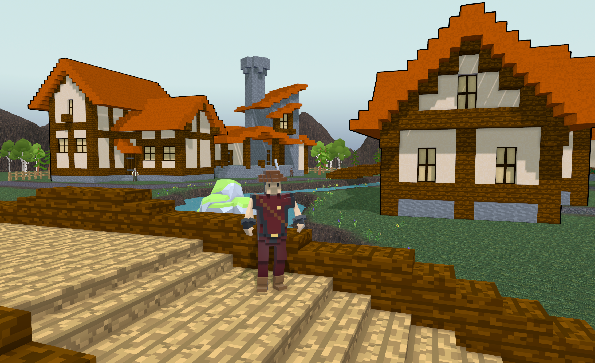
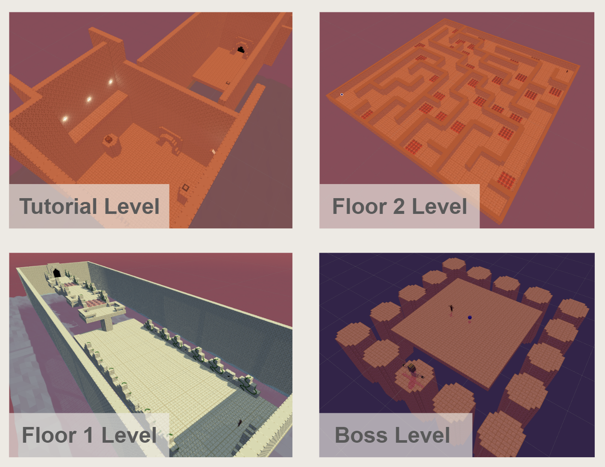
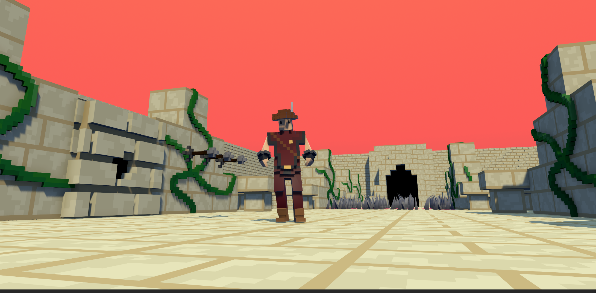
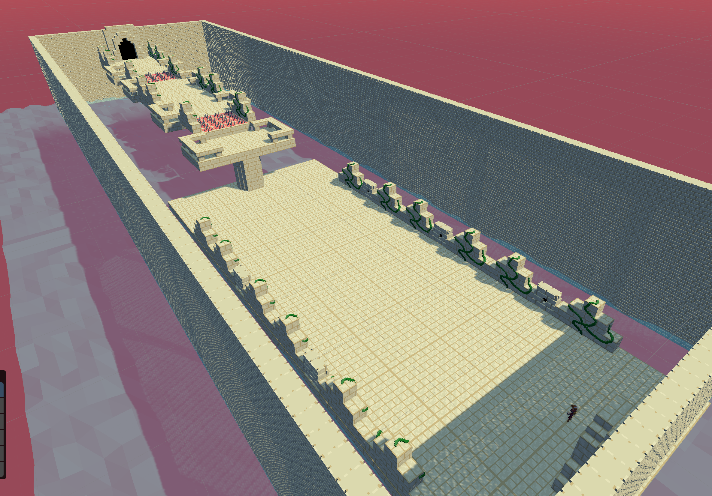
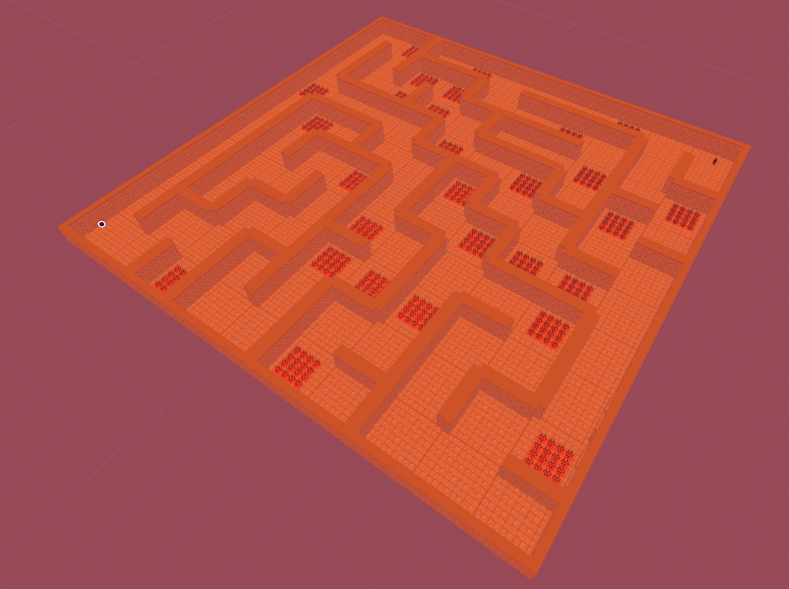
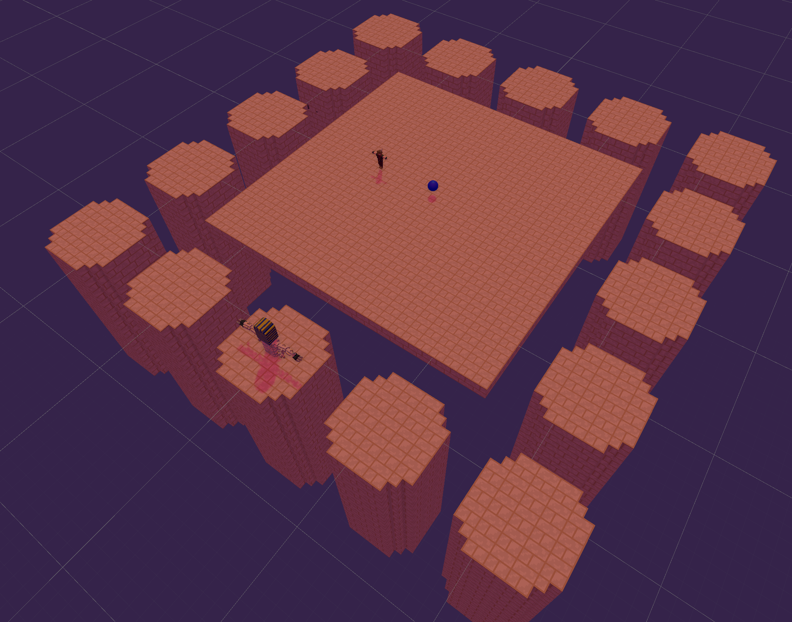
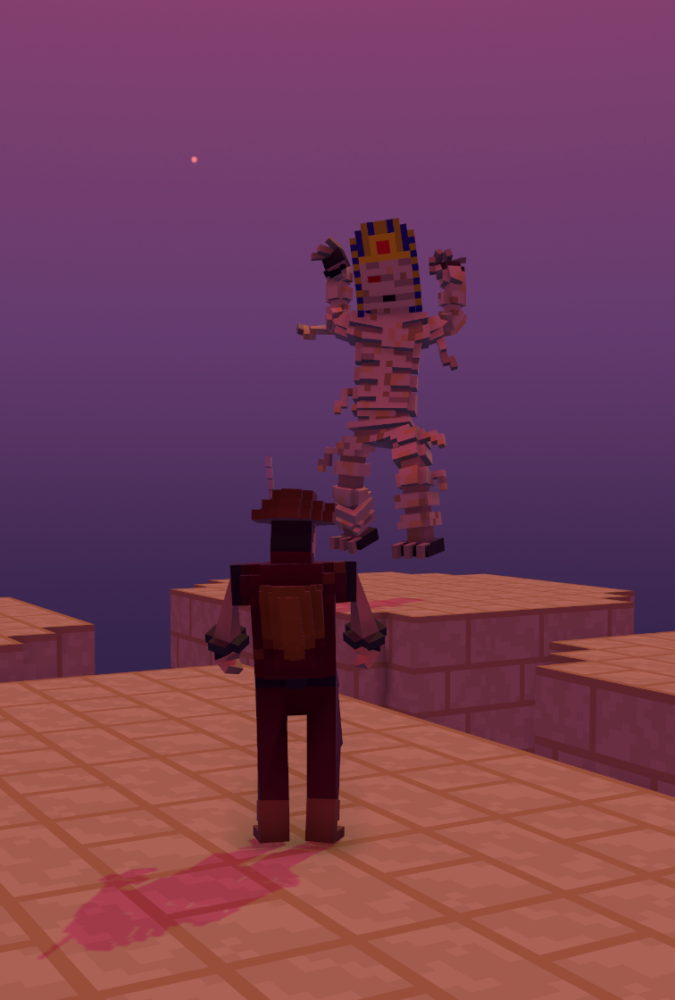
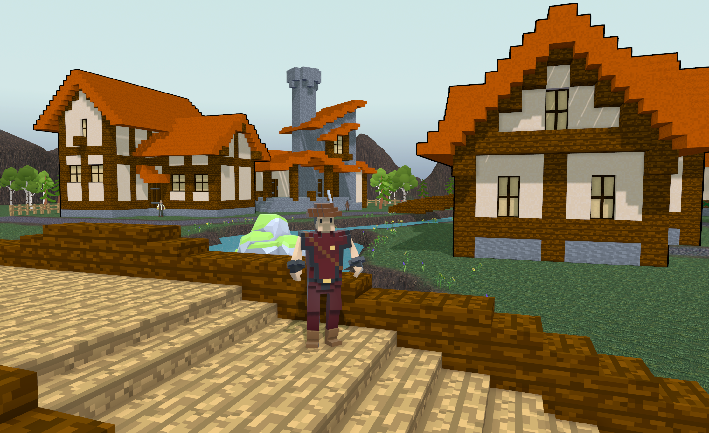
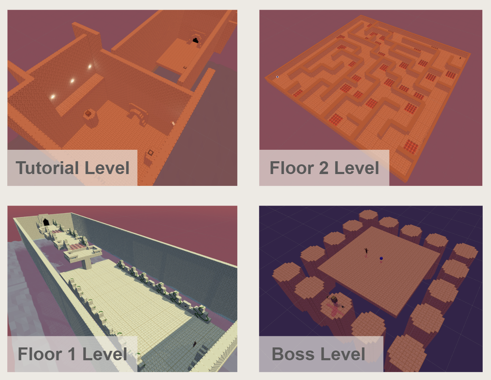
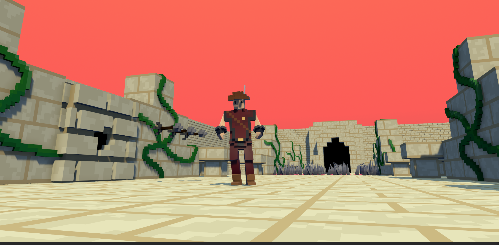
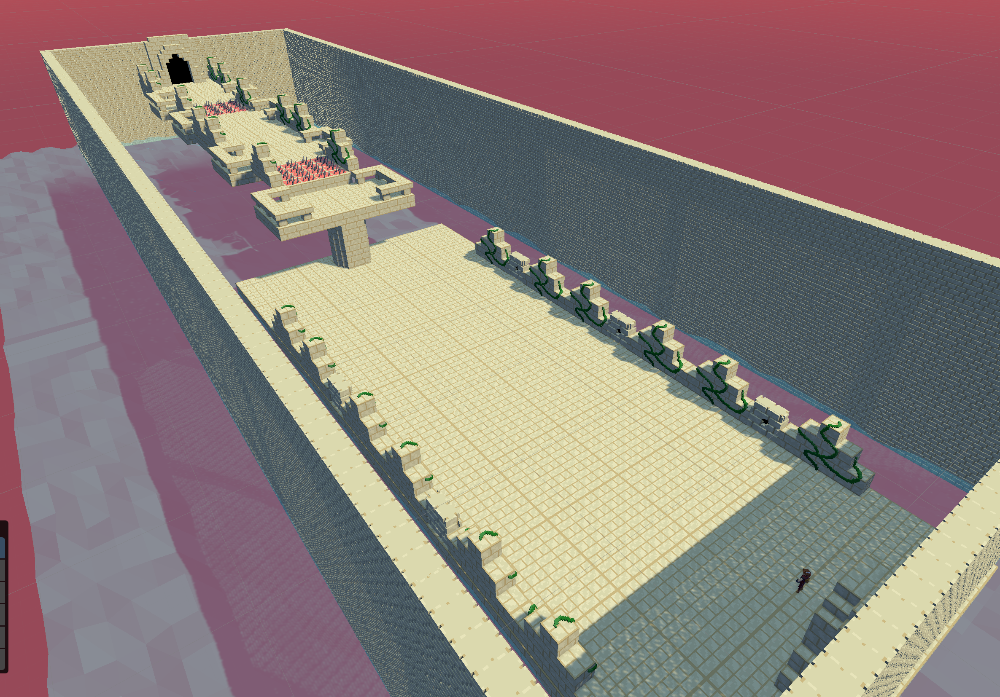
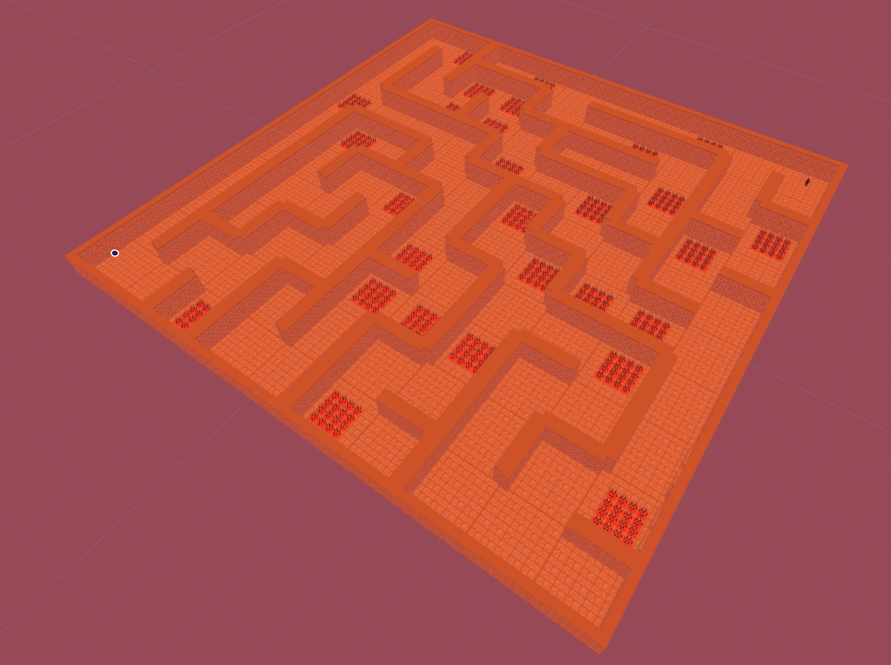
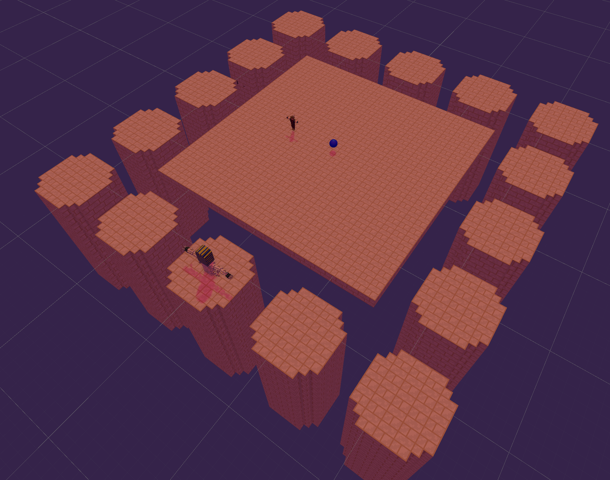
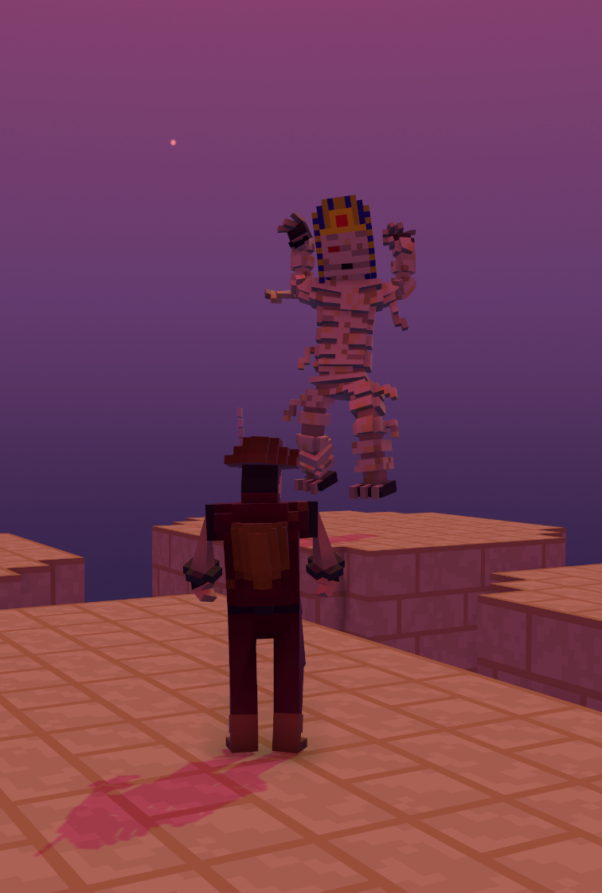
Gemini Project
Project Resources
Project Progress
Project Concept & Management
Project Specifications & Design
Project Acceptance Criteria & Testing Strategy/Plan
Progress Demos
Project Poster
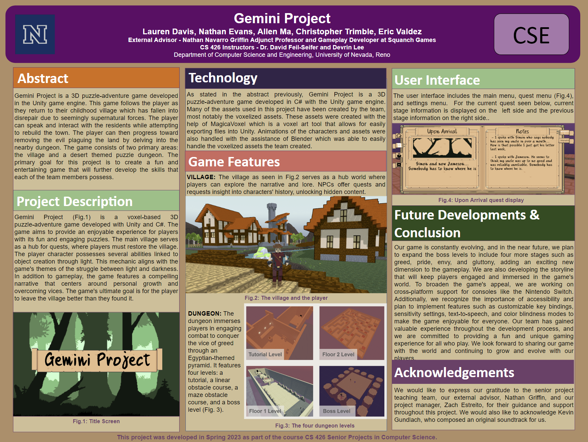Problem Domain Book:
- The Art of Game Design by Jesse Schell
Reference Article:
- “Game Development From a Software and Creative Product Perspective: A quantitative literature review approach” by Henrik Engstrom
- “Exploring Indie Game Development: Team Practices and Social Experiences in A Creativity-Centric Technology Community” by Guo Freeman and Nathan McNeese
- "General Video Game AI: A Multitrack Framework for Evaluating Agents, Games, and Content Generation Algorithms" by Diego Perez-Liebana et al.
- "Judging a Book by its Cover: Significance of UX Design in Gamification and Computing Systems" by Tulasi Sushra, et al.